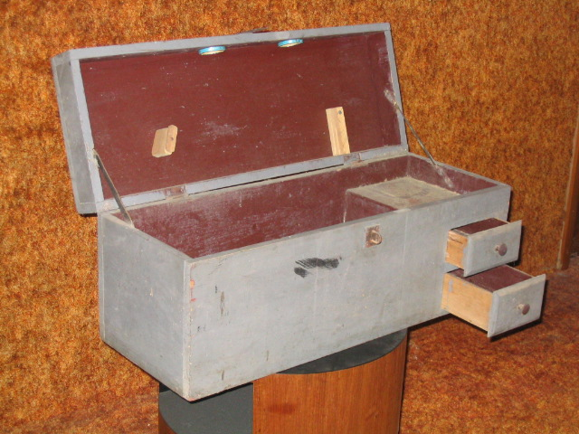
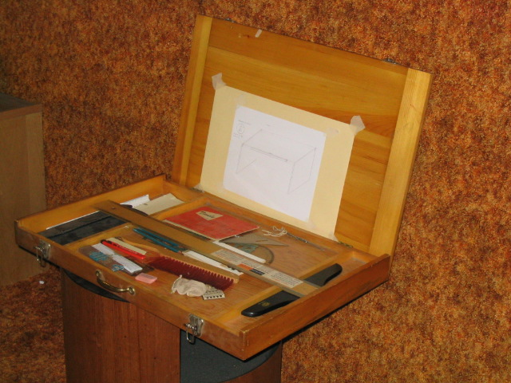
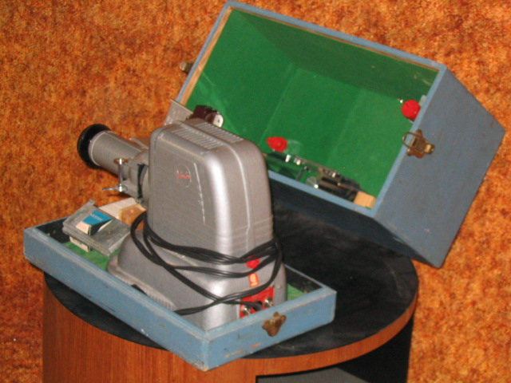
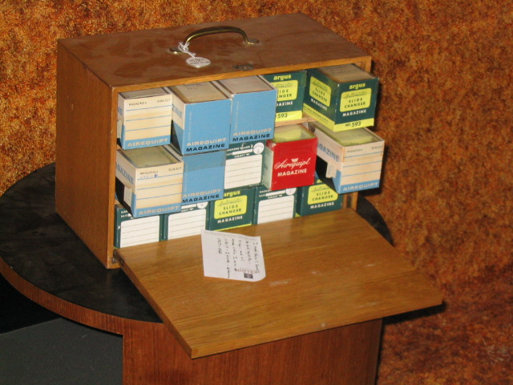

The Family Chronicle
No. 129 January 15, 2006
____________________________________________________________________
Pigtails, etc

I am at the “clean-up” stage of life and came across some of my early handiwork. I am sure that many readers could do the same.
Sometime between September 1949 and June 1951 I learned to twist and solder pigtails; I forgot all about it until I came across a soldering pot among my mementos. The above photo shows the soldering pot with the wire handle.
In those days electricians made joints by twisting the ends of wires together; these joints were called pigtails and they were commonly used in house wiring. The wires were then coated with resin so that the solder would stick. Because many electrical connections were in the ceiling boxes, a normal soldering iron was difficult to use. Instead one heated the soldering pot with a blow torch and then pushed it up so that the pigtail was immersed in the solder.
I made the soldering pot shown in the photo using a pipe coupling with a plug screwed into one end and then machined level. The handle is a piece of welding rod. The soldering pot would swivel as it was raised to the ceiling. Today, wires are joined with connectors.
The policeman, a lawn ornament, was made in 1944 while a student at MRHS.
The C-clamp and the Vee block were hand made also and part of my training while at the New Brunswick Technical Institute in 1949-1951. At that time I was learning to become an industrial arts teacher.

The toolbox shown above was made while a student at MRHS, in Grade 10 I think. The pieces inside the cover were designed to hold two handsaws.

The drafting case was designed as a portable drafting case and was complete unto itself with a T-square, two triangles, a drafting scale, and a set of pencils.

I bought my first 35mm camera in 1953 and made the above carrying. The slides soon gathered and I made two cases (see photo below) to hold my slide cartridges. Unfortunately, the technology changed and I had chosen one that did not survive

Follow-up from Donald Edge
“Your December 3rd edition with a piece about my first cousin Fraser MacKay helping you with your pattern for window sticks reminded me of my early woodworking days. While I don't recall ever making window sticks, I do remember Fraser helping me carve a Winchester rifle which I hunted with for several years --this, despite my owning a .22 rim-fire rifle. There was no woodworking at the Upper Black River School, but back in Cambridge, Massachusetts, I did take sloyd, a woodworking course with a name that I believe derives from Swedish. In sloyd I built a shoeshine box that I still have, and a towel roller that has vanished. Towel rollers were a staple in every Black River kitchen, and I wonder who made them? Working with wood was a constant Black River activity…”
Ed. I would be delighted to hear
from others about their
school projects.
The Family Chronicle (Copyright) is an occasional newsletter published by Don Glendenning and posted on the family website. It is intended to share information about my family, community and the times in which I grew up. While every effort is made to be accurate, errors are likely to occur. Comments, enquiries and information may be sent to 62 Queen Elizabeth Drive, Charlottetown, PEI, C1A 3A9. Tel: 902 892 5859. Email: dglende@pei.sympatico.ca Web: www.glendenning.net/don